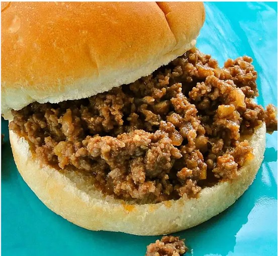

Tonya's Terrific Sloppy Joes

Description
This recipe is a really simple, quick, and tasty 'Sloppy Joe.' This is what we are having tonight before we go to the football game. You can also let this simmer in a slow cooker after browning the ground beef if you prefer.
Ingredients
- 2 lbs ground beef
- 1/2 cup chopped onion
- 1/4 cup chopped celery
- 7 oz ketchup
- 1 tablespoon brown suger
- 1 1/2 tsp Worcestershire sauce
- 1 tsp vinegar
- 1/4 tsp dry mustrad powder
- 1/8 tsp lemon juice
- 8 white or wheat hamburger buns
Directions
- Place a large skillet over medium-high heat. Crumble ground beef into skillet; add onion and celery. Cook and stir beef mixture until beef is completely browned, 7 to 10 minutes.
- Stir ketchup, brown sugar, Worcestershire sauce, vinegar, mustard, and lemon juice through the beef mixture. Reduce heat to medium-low and cook mixture at a simmer until mixture is hot and sauce has thickened, about 20 minutes.